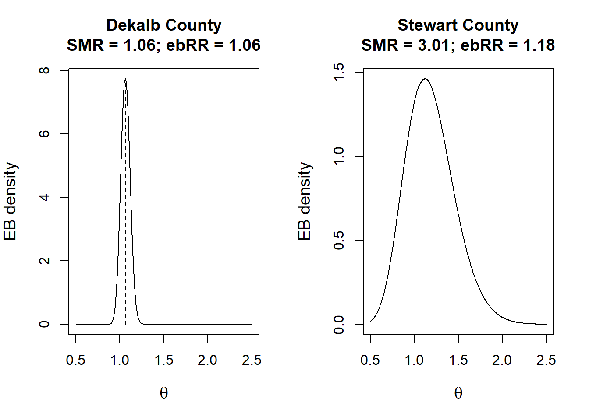
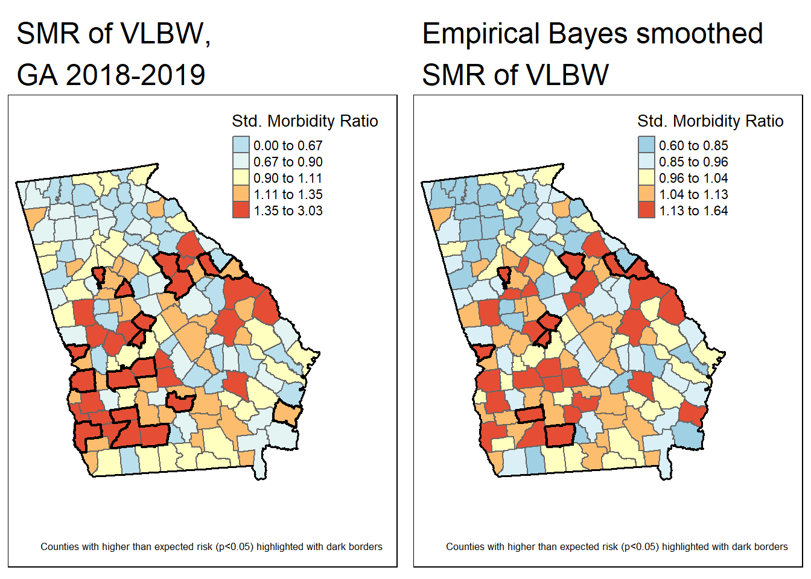

Week 4 Disease Mapping I
4.1 Getting ready, w4
4.1.1 Learning objectives, w4
| After this module you should be able to… |
|---|
| Determine and defend appropriate disease mapping strategies consistent with basic epidemiologic concepts (e.g. study design, sampling strategy, measurement error, and systematic bias) |
| Create statistically smoothed, age-adjusted disease maps of epidemiologic parameters including SMR, disease risk or rate, and measures of estimate precision/stability |
| Describe the modifiable areal unit problem and discuss strategies for evaluating bias arising from MAUP |
4.1.2 Additional Resources, w4
- Arianna Planey blog on spatial thinking and MAUP
- Waller L, Gotway C. Applied Spatial Statistics for Public Health Data. Hoboken, NJ: John Wiley & Sons, Inc; 2004.
- Clayton D, Kaldor J. Empirical Bayes estimates of age-standardized relative risks for use in disease mapping. Biometrics. 1987 Sep;43(3):671–81.
4.1.3 Important Vocabulary, w4
| Term | Definition |
|---|---|
| Bayesian methods | Methods of statistical inference in which Bayes' theorem is used to update the probability for a hypothesis as more evidence or information becomes available. In disease mapping, the Bayesian framework is frequently used to accomplish rate stabilization and smoothing by using global or local data to inform the 'prior' |
| Empirical Bayes methods | Estimation procedures in a Bayesian framework in which the prior distribution is estimated from the data. In disease mapping, Empirical Bayes estimators use global or local disease information as a prior in estimating (and smoothing/stabilizing) each local rate |
| Global vs Local spatial analysis | Global analysis evaluates a pattern or trends that characterizes the entire study region; in contrast local analysis characterizes patterns that are unique to each sub-region of the study area |
| Spatial dependence | When attribute values or statistical parameters are, on avreage, more similar for nearby places than they are for distant places. Spatial dependence is evaluated by looking at pairs or sets of places. |
| Spatial heterogeneity | Attributes or statistical parameters are varied (e.g. not homogenous) across sub-areas in a broader region. In Disease mapping we typically are evaluating whether (and how much) disease intensity (risk, rate, prevalence) varies across places. |
| Standardize Morbidity/Mortality Ratio (SMR) | The ratio of observed to expected disease morbidity or mortality. Often the 'expected' is defined as the overall population (or study-specific) rate; in that case the SMR indicates the relative deviation of a specific unit from the global or overall rate |
| Stationarity vs non-stationarity | Many statistics assume that the parameter, estimate, or property is constant across sub-units. For example if we take the average height of a population, under stationarity we would assume that average applies equally to sub-populations. In contrast, non-stationarity implies the parameter, estimate, or property varies across sub-groups. In spatial analysis stationarity is an assumption of homogeneity, and non-stationarity allows for heterogeneity. |
4.2 Spatial Thinking in Epidemiology, w4
Disease mapping is located at the intersection of statistics, geography, and epidemiology. Whereas the out-of-the-box GIS approach to making maps of health statistics (e.g. what I’ve been referring to as epidemiologic cartography) takes raw data and simply shows it on a map, disease mapping typically implies that we are interested in going beyond just making pretty maps. Instead we are driven by core epidemiologic questions and concerned about fundamental epidemiologic and statistical issues.
4.2.1 Why do we need disease mapping?
The defining driver or purpose of epidemiology is an interest in characterizing and estimating the distribution and determinants of health in populations. Disease mapping is primarily focused on the former (distribution of health), providing novel insight into the geographic patterns of health and disease. The latter (determinants of health) can begin to be addressed by Modules 3 and 4 of this course focusing on Clustering and Spatial Regression.
To spatially describe the distribution of disease, epidemiologists are primarily interested in one over-arching question:
Is the intensity of disease or health spatially heterogeneous or spatially homogenous?
Spatial heterogeneity simply implies that the global parameter (e.g. rate, risk, prevalence, etc) for an entire study area is not identical to the local parameter in every sub-region of that study area. In contrast, spatial homogeneity means that if you know the overall, global parameter, you basically know every local parameter, plus or minus random variation. Looking for heterogeneity is the whole reason for mapping. If the occurrence of disease were the same everywhere, a map would not tell us much! In previous weeks we mapped disease, but our epidemiologic cartography efforts to date fall short because we did not attend to the following three challenges:
- Parameter estimate instability due to sparse data/rare events;
- Spurious heterogeneity arising from ‘confounding’ by nuisance covariates;
- Biased description of spatial heterogeneity arising from the modifiable areal unit problem (MAUP), a form of the ecologic fallacy
4.2.1.1 The problem and approach to data sparsity
Reliable and precise estimation of any parameter presumes we have sufficient data to produce a summary (e.g. a measure of central tendency like a mean, prevalence, risk, etc). When either a disease is quite rare – resulting in a small numerator – or the population at risk is quite sparse – resulting in a small denominator – the estimate of disease burden is inherently unstable. That means that adding just one or two more events or persons at risk has a notable impact on the estimate. For instance imagine a county with 10 people. In one year, perhaps none die, in the next year one dies, and in the third year three die. The mortality rate is estimated at 0%, 10% and 30%, when none of those seems very plausible as an average expected mortality. The problem is the estimate of mortality rate is derived from too little data.
In practice, public health agencies often suppress data when counts are small, both out of concern for confidentiality, but also because the resulting estimates are so unstable as to be potentially misleading. We have already discussed two approaches to address data sparsity and the resulting parameter instability or imprecision:
- Aggregate over more time to increase the opportunity for events, or extend the amount of person-time
- Aggregate over geographic units to pool together larger populations. For example data for mortality may be too sparse at the census tract level but might be stable after pooling all tracts to their respective county level.
We will spend the next several weeks exploring a range of methods that together constitute a third option: statistical smoothing or stabilization. These tools use the amount of information (as a function of sample size) to smooth extreme highs and extreme lows in an effort to recover a plausible ‘true’ amount of spatial heterogeneity. A critical goal of disease rate stabilization is that we do not smooth any more than is necessary, so that true highs and lows persist, but spurious or unstable values are adjusted.
This week we will use aspatial or global Empirical Bayes estimators as our first approach to parameter stabilization. In future weeks we will explore spatial Empirical Bayes, kernel density estimators, and fully Bayesian estimators as additional strategies for producing maps that highlights the signal of spatial heterogeneity net of the noise from random error.
4.2.1.2 The problem and approach to confounding
Confounding in epidemiology refers to a specific causal structure, wherein the association between a putative exposure and a target disease outcome is spuriously biased because of a backdoor path through one or more confounders. In disease mapping we do not have a formal ‘exposure’, with place perhaps being a stand-in for unmeasured attributes that vary through space. Therefore we probably should not call this confounding in the strictest sense of the word.
Instead you can imagine that there are covariates that are simply a nuisance. That means they explain some amount of spatial heterogeneity, but you as the epidemiologist are not particularly interested in their role as an explanation; instead you wish to know if there is still heterogeneity above and beyond those covariates. For example consider comparison of mortality rates by state:
| State | Crude mortality rate (per 100,000) | Age-adjusted mortality rate (per 100,000) |
|---|---|---|
| Florida | 957.3 | 666.6 |
| Alaska | 605.7 | 745.6 |
Using the crude mortality rate, it is clear that Florida has a mortality rate perhaps 30% higher than Alaska, suggesting something really awful is going on in Florida! However once we adjust or standardize by age, it is actually Alaska that has a slightly higher mortality rate. Depending on your purpose both numbers are useful, but if mapping mortality across states, you might think that differences in age-structure (e.g. many more retirees in Florida than Alaska) is a nuisance to accomplishing the goal; so for disease mapping an age-adjusted estimate may be more useful.
The strategies in spatial epidemiology for addressing confounding (e.g. removing the effects of nuisance variables) is similar to those in non-spatial epidemiology. Standardization, stratification, and regression control are conventional tools. In disease mapping it is quite common to use standardization as a tool to balance or condition on one or more covariates, such as age. However there are methods including the fully Bayesian models and later spatial regression models, where it is possible to control for multiple covariates.
4.2.1.3 The problem and approach to MAUP
In this interesting article about the Flint water-lead crisis, a geographer, Richard Sadler, describes mapping some lead-level data from Flint early in the process. There had been some alarms raised about high levels of lead in Flint, but state-based reporting did not identify or detect anomalies. As the geographer points out, this was likely because state-based reporting was based on (aggregated to) zip codes. While zip codes are not ideal geographic units for any disease mapping, it may not be apparent exactly why zip codes could have led public health officials astray in Flint. Until you look at the map of zip code boundaries overlaid city boundaries.

FIGURE 4.1: Zip code boundaries in Flint, Michigan
As you can see, there are seven zip codes in the Flint area, but only two of them are fully contained within the city limits. The others seem evenly split between areas inside the city limits and outside the city. This became important because the water system issues that produced excess lead exposure were constrained to households inside the city limits. The net result was that aggregation of events (high blood lead levels) and population at risk within each zip code area contained a mix of truly exposed and unexposed households. The zip code reporting masked or obscured the true elevations, diluting the early warnings of a problem.
This is a powerful example of the concern referred to by geographers as the modifiable areal unit problem (MAUP). Epidemiologists may be familiar with a related idea: the ecologic fallacy or ecologic bias. The problem is not inherently about aggregation. Instead the problem arises when the way data are aggregated results in a mixing of different types of people, producing a kind of cross-level confounding. In Flint this meant diluting the population with people exposed to clean water, but it could also result from enriching a specific region with people with confounding risk factors, producing a spurious estimate of the true experience of health within the area.
There are two ways that the MAUP can occur:
- Arbitrary zoning or boundaries to create aggregates. This is the case in Flint, where one (arbitrary) zoning system (zip codes) was applied to a different zoning system (e.g. municipal city boundaries). The result is a mis-alignment between what is actually happening and the way we count it up.
- Arbitrary scale or level of aggregation. This occurs when we aggregate to a level or scale that is different from the level or scale at which population health is generated. There is no single ‘right’ scale. It depends on the process of interest. The ‘correct’ scale for understanding the effect of Medicaid expansion under the ACA is likely different from the ‘correct’ or best scale for understanding the role of healthy commercial food retailers on obesity.
One key take away from the above discussion is that the bias from the MAUP arises when the way we carry out an analysis does not align with the way that health occurs. In other words, not all aggregation or zoning are similarly harmful. The work for the spatial epidemiologist is to consider how aligned (or mis-aligned) the available aggregation is with respect to the hypothetical process. Sometimes it is possible to explore sensitivity of results to choice of scale or zoning but repeating analyses with alternative boundaries or scales.
4.2.2 Using statistics and probability models to improve disease mapping
In epidemiology, we spend a lot of time trying to disentangle ‘noise’ from ‘signal’ in collections of data and their relationships. This is evident in our focus on two broad buckets of error: random error that comes from chance and is related to sample size; and systematic error that comes from structural bias (e.g. confounding, selection, misclassification/measurement error) that is not driven by sample size and is therefore not fixed by increasing sample size).
To make inference (make meaning or decisions) from data that take account of random error we adopt statistical probability models that describe the role of chance alone in generating values. For instance many statistics operate under assumptions related to Gaussian or normal distributions. We also rely on Poisson and binomial distributions to evaluate variation and differences for count and binary data respectively.
4.2.2.1 How are statistics different in space?
Spatial statistics is a huge field, well broader than what we will cover this week, or this entire semester. However it is worth introducing a few key ideas to motivate the statistics we will be using.
Health events typically occur at the level of the individual, and individuals can be referenced with respect to their location in space. Consider, for example a study region represented by the blue square in the image below. There is a population distributed across the region, occupying any particular \(x,y\) location. In this population defined by geographic bounds, there may be some individuals experiencing a health event. The set of points observed at a point in time represents a specific realization of a spatial point process. In other words we can imagine each individual having some random chance of experiencing the event, and the set of events indexed by their location is one realization or version of the random process.

FIGURE 4.2: Spatial point process
To describe or quantify what is observed we could describe the spatial disease intensity of the event as a spatially continuous surface. In other words for every location, the intensity is the amount of disease per unit-area. To calculate a single, global, measure of spatial intensity for the figure above we divide events by area:
\(\frac{events}{Area}=\frac{14}{4km^{2}}=\frac{3.5}{km^{2}}\)
In this simplistic case we assumed the population at risk was evenly distributed across the study region. More realistically, we can normalize events to the spatially-varying population at risk to quantify the spatial intensity of disease.

FIGURE 4.3: Approximating intensity with areal aggregates
Because we often do not have the exact \(x,y\) location of every person at risk and every health event, we cannot observe the full spatial point process and thus cannot estimate the continuous spatial intensity surface. However, we can approximate the spatial intensity by aggregating health events and population and summarizing the ratio (e.g. as risk, rate, prevalence) per areal unit. In the figure above, each rectangle contains \(n=100\) person-years at risk, producing the following disease rates estimating the spatial intensity of disease:
| Region | \(\frac{events}{population}\) | Estimate |
|---|---|---|
| A | \(\frac{6}{100}\) | 6% |
| B | \(\frac{2}{100}\) | 2% |
| C | \(\frac{5}{100}\) | 5% |
| D | \(\frac{10}{100}\) | 10% |
When we have data in this form (e.g. counts of events and counts of population), we can use one of several parametric statistical probability distributions common in epidemiology including Poisson, binomial, and negative binomial.
Why are probability distributions useful?
Because they provide a model for describing what to expect fro data due to random chance alone. Specifically, relating the count of disease events to a probability distribution permits the calculation of standard errors or confidence intervals expressing the precision or certainty in an estimate. Alternatively we could calculate a p-value as a means to test evidence for consistency with a null hypothesis.Here is a brief summary of probability distributions common to disease mapping:
| Distribution | Paramaterization | MLE and comments |
|---|---|---|
| Binomial | \(Y_i|r_i\sim Bin(N_i,r_i)\) | \(\hat{r_i}=\frac{Y_i}{N_i}\) |
| Poisson | \(Y_i|\theta_i\sim Poisson(E_i\theta_i)\) | \(\theta_i = \frac{Y_i}{E_i}\) |
| Poisson-gamma mixture (a.k.a negative binomial) | \(Y_i|\theta_i\sim Poisson(E_i\theta_i)\), \(\theta_i \sim gamma(\alpha, \beta)\) | Note the gamma distribution explains how much the \(\theta_i\) varies. In Bayesian framework the gamma is a prior for \(\theta\). |
In the formulas above:
- \(Y_i\) is the count of health events in the \(i_{th}\) areal unit
- \(N_i\) is the count of population at risk in the \(i_{th}\) areal unit
- \(r_i\) is the risk in the \(i_{th}\) areal unit
- \(E_i\) is the expected count, which is calculated as \(N_i\times r\), where \(r\) is an overall reference level of risk. So expected simply means the burden of disease in the \(i_{th}\) areal unit if they experienced the reference risk.
- \(\theta_i\) is the relative risk in the \(i_{th}\) areal unit; this is essentially the relative deviation of this region from the expected.
Don’t panic looking at these formulas. Here are some take away points:
- Poisson distribution is a classic distribution to use for evaluating counts of events possibly offsetting by the time-at-risk or person-years.
- Poisson assumes that the mean of the distribution is the same as the variance of the distribution.
- Poisson distribution only approximates the disease intensity rate well for rare disease processes. Therefore Poisson is not a good choice if the outcome is not rare.
- Binomial distribution is useful for characterizing disease occurrence for non-rare or common disease processes.
- Poisson-gamma Mixture may be the most foreign. However, you may have heard of the Negative Binomial distribution for count data? Poisson-gamma mixture is essentially a negative binomial model. It is a probability distribution like the Poisson, except without the expectation that the mean is equal to the variance. In other words it is robust to what is called over-dispersion, when the variation in the count is greater than expected under the Poisson.
- Over-dispersion is quite common in spatial epidemiology because there often are unobserved factors driving the occurrence of disease in each area, and those unobserved differences produce event intensity that is not strictly Poisson in nature. We will use Poisson-gamma for this reason.
If you want to learn more about Poisson point processes or probability distributions for spatial epidemiology, I highly recommend Lance Waller’s text, Applied Spatial Statistics for Public Health Data (Waller & Gotway, 2004). It is available electronically via Woodruff Library.
4.3 Spatial Analysis in Epidemiology, w4
As an example dataset, for the next four weeks of disease mapping we will aim to estimate the spatial heterogeneity at the county level of the occurrence of very low birthweight (VLBW; weight at birth < 1500 grams) babies in 2018-2019. These data were derived from the Georgia OASIS website. This outcome is of public health importance because of the high morbidity and mortality associated with being born so early or so small. However, with an overall rate of VLBW of only 1.8%, it is a rare outcome, and there will likely be sparse data for many rural counties.

In the maps above, we can visualize the observed VLBW prevalence as well as the prevalence restricted only to counties meeting the NCHS suppression rule for natality records (e.g. suppress reporting of any count < 10). In the map on the right 85 of the 159 counties of Georgia would have suppressed data. This suggests that, even when we know the values (e.g. they aren’t suppressed) we should be thinking about issues of imprecision or instability in the estimates (and therefore in the map overall) because so many counties have such sparse data.
There are four disease mapping objectives we wish to accomplish to more fully describe these data:
- Test whether there is statistical evidence for spatial heterogeneity
- Describe the precision of VLBW estimates in each county
- Account for possibly spurious patterns due to a confounding covariate
- Produce overall and covariate-adjusted smoothed or stabilized rate estimates using global Empirical Bayes.
4.3.1 Disease mapping: Is there spatial heterogeneity?
4.3.1.1 Calculating expected counts and the SMR
Up until now we have primarily represented disease burden using risks, rates, or prevalence. However, as we introduce statistical estimation under Poisson and Poisson-gamma (negative binomial), we are often testing whether an area deviates from the expected value. A natural way to represent this deviation is by using Standardized Morbidity Ratios (SMRs) as an alternative to risks or rates:
\(SMR_i=\frac{Y_i}{E_i}\)
The standardized morbidity ratio (could also be standardized mortality, incidence, or prevalence depending on what is being counted) is a measure of relative excess risk. It quantifies the deviation of a population parameter (in this case the live birth risk of very low birthweight for a geographically-defined population) from a reference value (in this case the VLBW risk for the whole state of Georgia). The SMR is calculated as the Observed count of events, \(Y_i\), over the Expected count, \(E_i\), of events.
Calculating expected counts of VLBW events in these data is straightforward: first calculate the overall risk, \(r\), and then multiply that by the population at risk in each county, \(N_i\), to get the events expected if there were homogeneity in risk, or if the \(SMR=1.0\) for all counties.
# the overall ratio of events to population is the global risk
risk <- sum(vlbw$VLBW) / sum(vlbw$TOT)
# Now add a variable to the dataset representing expected count and SMR
vlbw <- vlbw %>%
mutate(expect = risk * TOT,
SMR = VLBW / expect)As you can see in the maps below, the SMR represents the same unerlying pattern, but simply does so on a different scale, that of relative excess risk rather than absolute risk.

4.3.1.2 Testing for spatial heterogeneity
Perhaps the fundamental purpose of disease mapping is to describe and represent the magnitude and patterns of spatial heterogeneity or variation in health across sub-areas of a study region. But what if there isn’t any real variation!? For instance consider each of these scenarios:
- There is very little meaningful difference in values, yet we can cartographically represent data as appearing heterogeneous simply by choice of cutpoint and color assignment.
- There appears to be large differences in values between sub-areas, but the counts are so sparse that it is possible all of the seeming difference is due to chance
For these reasons it is sensible to start by evaluating the evidence for any versus no heterogeneity. If none, there is little reason to proceed with spatial analysis. Luckily there are standard statistical tests designed just for this purpose: to evaluate whether the count of events is significantly different across observations, accounting for the number of trials or persons at risk.
The R package DCluster has a function for a chi-square test optimized for the needs of aggregated data in spatial epidemiology. The test is called achisq.test() and it can evaluate variation in numerator and denominator under a Poisson or Negative Binomial (recall this is same as Poisson-gamma) distribution. The sf data object containing the VLBW information is called vlbw; within that sf object is a column named VLBW representing the count of babies born very low birthweight in the county, and another variable named TOT representing the count of all live births. In the language of Poisson, \(Y_i\) is the count variable VLBW for each county, and we evaluate that count against the offset which is the log of the number of births at risk.
Look at the help documentation for this function; here I specify the statistical model as Poisson. The argument R=499 refers to the number of random permutations to use in calculating an empirical p-value.
## Chi-square test for overdispersion
##
## Type of boots.: parametric
## Model used when sampling: Poisson
## Number of simulations: 499
## Statistic: 416.6378
## p-value : 0.002The null hypothesis is that the relative risk or SMR is equal to one for all counties. In other words, under the null, there is no meaningful difference in the risk between counties. Based on 499 simulated permutations under the null, the observed data appear quite inconsistent with the null assumption, as evidenced by p.value = 0.002. In other words under a strictly Poisson probability model, there appears to be significant spatial heterogeneity in the risk of VLBW.
In conventional statistics we often have closed form formulas for calculating standard errors, confidence intervals or p-values. However, in spatial statistics the simple parametric assumptions do not always hold. One empirical alternative to the closed-form formula is to use random permutations of the data to simulate the random data under the null hypothesis.
In the case of theachisq.test(), the null hypothesis is that the observed count is equal to the expected count. Random permutations of this would be to take a random Poisson draw for the count in each county under the null. If we repeat that hundreds of times, we have a distribution of what random chance would produce. Then we compare our actual observed values to that distribution. If the observed values are very different from the set of random values, we might say there is evidence against the null.
What would happen if we allowed that the distribution under the null was Negative Binomial (e.g. Poisson-Gamma) rather than strictly Poisson? We could specify that and re-calculate the p-value testing for evidence of significant heterogeneity:
## Chi-square test for overdispersion
##
## Type of boots.: parametric
## Model used when sampling: Negative Binomial
## Number of simulations: 499
## Statistic: 416.6378
## p-value : 0.794This assumption seems to give us an entirely different picture of what is going on! While this will not always occur (e.g. in many instances a test for heterogeneity under either Poisson or Negative Binomial will result in consistent determination of statistical significance), it is also not a complete surprise. There are two points worth making about the comparison of these two results.
First, to understand how this is possible it might help to visualize the probability distributions themselves to fix in our minds what ‘over-dispersion’ or ‘extra-Poisson variance’ mean. Here is a plot of 10,000 draws from two random distributions, the Poisson and the Negative Binomial. In each, the mean expectation under the null is that there are \(10\) events, indicated by the blue dotted line. The left panel is the histogram of how many events occurred (assuming an expected mean of \(n=10\)) with the Negative Binomial, and the right panel shows the distribution under random draws from the Poisson.

The Negative Binomial distribution is fatter, especially in the right-tail. This means that even if the null/expectation of \(n=10\) were true, we would expect a wider range of counts (including more instances of high counts) by chance alone under the Negative Binomial as compared with the Poisson.
A second point worth making is that this early step – testing for aspatial heterogeneity – is just that: a first look. There are many reasons for data to behave with variance in excess of the Poisson expectation. Over-dispersion can arise when there are important missing variables which predict the outcome event and vary spatially. This is quite common. If there were no evidence of spatial heterogeneity under either distribution, we might consider throwing in the towel now. However, given evidence of unusual behavior under a Poisson expectation suggests further exploration might be worthwhile. However, clearly we should consider using the Poisson-Gamma approach for subsequent analyses including Empirical Bayesian smoothing, below.
4.3.2 Disease mapping: How precise are county estimates?
Following the question of whether or not there is global spatial heterogeneity (e.g. at least some counties have \(SMR\neq 1.0\)), a natural follow up would be how confident or precise are the estimates themselves, and which counties are statistically significantly different from the null expectation?
A function to estimate the continuous p-value associated with the SMR is the probmap function from the package spdep. This function calculates the probabilities (under the Poisson probability model) of observing an event count more extreme than what was actually observed, given the expected count (e.g. we might expect every county had the overall risk). The test is a one-tailed test, and by default the alternative hypothesis is that observed are less than expected, or that SMR <1.0 (to test for extremes greater than 1.0, set the argument alternative = 'greater').
probmap, we can think about probabilities on either side of the spectrum. For instance, with the default alternative = 'less', a probability that is \(p<0.05\) would indicate an \(SMR<1\) was statistically significant (at \(\alpha=0.05\)). In contrast, \(p>0.95\) would suggest an unusual finding, under the null, for \(SMR>1\). The \(p>0.95\) for the alternative = 'less' would therefore be equivalence to the \(p<0.05\) for the alternative = 'greater' for describing significance with \(SMR>1\).
probmap expects several arguments including a vector of the count of cases, a vector of the population at risk, and optionally a row.names vector to help align observations. Because your job is to identify counties with SMR in excess of expected (e.g. >>1), it is easier to interpret if we change the alternative hypothesis of the one-sided test to be alternative = 'greater'.
The function returns the expected count (yet another way to get this number!), as well as the SMR (in this case it is named relRisk, and somewhat oddly the function multiplies the SMR by 100 so the numbers appear different!), and the Poisson probability that the observed count was more ‘extreme’ than actually observed.
library(spdep)
x <- probmap(n = vlbw$VLBW, x = vlbw$TOT,
row.names = vlbw$GEOID,
alternative = 'greater')
head(x) # look at what is returned| raw | expCount | relRisk | pmap |
|---|---|---|---|
| 0.0189 | 424 | 104 | 0.23 |
| 0.0121 | 19.5 | 66.8 | 0.95 |
| 0.0179 | 414 | 98.5 | 0.625 |
| 0.0242 | 33.1 | 133 | 0.0403 |
| 0.012 | 4.53 | 66.2 | 0.83 |
| 0.0136 | 13.3 | 75 | 0.855 |
As you can see, the function calculates:
- Raw rate, which is simply \(\frac{Y_i}{N_i}\)
- Expected count, which is simply \(r\times N_i\), where \(r\) is the overall expected rate
- Relative risk, which is also the SMR and is the ratio of the observed to expected. Note that the function multiplies the SMR by 100. So the value 103 actually refers to an SMR of 1.03
- p-value, which again is the probability that the risk in this county was significantly greater than 1.0
For mapping, we will grab the SMR (e.g. relRisk but divided by 100 to make it more conventional) and the p-value term, pmap, which we can easily add to our sf object:
4.3.2.1 Mapping the p-value for the SMR
To produce a p-value map depicting the continuous probability that we would observe an SMR that is more extreme than observed (and specifically in this case, greater than observed), assuming the null described by the expected count is true, we could use the probability retrieved from the previous code in a map, next to the map of the SMR itself:
smr_map <- tm_shape(vlbw) +
tm_fill('SMR',
style = 'fixed',
palette = '-RdYlBu',
breaks = c(0.13, 0.67, 0.9, 1.1, 1.4, 2.3),
title = 'Std. Morbidity Ratio') +
tm_borders() +
tm_layout(main.title = 'VLBW in Georgia, 2018-2019',
inner.margins = c(0.02, 0.02,0.05,0.2))+
tm_shape(ga) +
tm_borders(lwd = 2, col = 'black')
prob <- tm_shape(vlbw) +
tm_fill('pmap',
style = 'cont',
palette = 'PiYG',
n=7,
title = 'Prob SMR > 1\nby chance alone') +
tm_borders() +
tm_layout(main.title = 'Probability Map',
inner.margins = c(0.02, 0.02,0.05,0.2))+
tm_shape(ga) +
tm_borders(lwd = 2, col = 'black')
tmap_arrange(smr_map, prob)
While this is interesting, perhaps what is more useful would be to quantify these probabilities into familiar thresholds. For example we could use the output of the probmap() function to calculate custom p-value categories.
The following code does several things:
- REMEMBER:
probmapcarried out a 1-sided test, but to make this align with results from the confidence intervals where we identified counties with extreme values in either direction, which were implicitly two-sided, we will look for counties with p > 0.975. - By using
group_by(pmap.pv)along withsummarise(), this code dissolves any adjacent counties that are significant (or not significant). The result will be a map with general borders around sets of significant counties rather than around each county separately. - Finally, by using
filter(pmap.pv == 1)this code removes the counties that are not significant. The result is the desired dark borders only for counties that are statistically significantly higher risk than expected.
pv <- vlbw %>%
mutate(pmap.pv = ifelse(SMR > 1 & pmap < 0.05, 1, 0)) %>%
group_by(pmap.pv) %>%
summarise() %>%
filter(pmap.pv == 1)
tm_shape(vlbw) +
tm_fill('SMR',
style = 'fixed',
palette = '-RdYlBu',
breaks = c(0.13, 0.67, 0.9, 1.1, 1.4, 2.3),
title = 'Std. Morbidity Ratio') +
tm_borders() +
tm_layout(main.title = 'SMR of VLBW, GA 2018-2019',
inner.margins = c(0.1, 0.02,0.05,0.2)) +
# Add dark borders for significant
tm_shape(pv) +
tm_borders(lwd = 2, col = 'black') +
#tm_shape(ga) +
tm_borders(lwd = 1.5, col = 'black') +
tm_credits('Counties with higher than expected risk (p<0.05) highlighted with dark borders')+
tm_shape(ga) +
tm_borders(lwd = 1, col = 'black')
4.3.3 Disease mapping: Adjusting for covariates
While the SMR is straightforward for an overall total, it is also possible to calculate an SMR which adjusts for a covariate, such as maternal age, by using indirect standardization. This means that you apply the reference rate within each strata (e.g. of age in this case) to the population-at-risk within each county-age strata.
You may recall from earlier classes (perhaps EPI 530) that you learned about direct and indirect age-standardization (if you are not familiar with direct and indirect standardization, it will be helpful to review old Epi Methods course notes as a refresher!). While standardization may not have been mentioned much since then, it is a tool to adjust for confounding, just as you might with stratification of \(2\times 2\) tables, or multivariable regression. It is not the only way to adjust for individual-level covariates in spatial analysis, but it is a common approach when there is only 1 or perhaps 2 categorical covariates.
Calculating the expected count with standardization for a categorical variable (e.g. maternal age) requires that the data be arranged so that there is a row of data within each county representing the count of deaths for each of the age-strata. While you could hand-calculate the standardized expected counts, there is a convenience function for calculating expected counts using covariate strata that you may find easier.
The convenience function is part of the SpatialEpi package. The expected() function expects 3 arguments:
- A vector of the count of the population at risk, including a row for every covariate strata within every region;
- A vector of the count of the number of events or cases (again separately for each strata of covariate and region);
- The number of strata within each region (e.g. how many age or covariate categories are possible within a county?)
To age-adjust the vlbw data, we need a different object including counts not only for each county, but each age-category within county. Luckily we can retrieve that from Georgia OASIS. The object age has the same structure as vlbw except that instead of \(159\) rows for \(159\) counties it has \(1431\) rows for \(159\times 9\) age categories. Said another way, these data are long.
| GEOID | NAME | AGECAT | VLBW | TOT |
|---|---|---|---|---|
| 13001 | Appling | 10 - 14 | 0 | 1 |
| 13001 | Appling | 15 - 17 | 2 | 12 |
| 13001 | Appling | 18 - 19 | 0 | 30 |
| 13001 | Appling | 20 - 24 | 4 | 149 |
| 13001 | Appling | 25 - 29 | 4 | 141 |
| 13001 | Appling | 30 - 34 | 0 | 72 |
The expected() function will take the covariate-stratified counts, and calculate a single expected count for each region. This can be used to produce age-adjusted SMR’s. Notice how the output of the following function is in the vlbw object, which has N=159 rows of data, despite the inputs (e.g. the information to the right of the assignment arrow) being from the age object, which has \(1431\) rows.
library(SpatialEpi)
# First, must insure that data are sorted by county and covariate category
age <- age %>%
arrange(GEOID, AGECAT)
# Calculate the age-adjusted expected counts
vlbw$expected_indirect <- SpatialEpi::expected(population = age$TOT,
cases = age$VLBW,
n.strata = 9)
# Remember, if you added 0.5 to observed above, do so here as well!
vlbw$SMR_adj <- vlbw$VLBW / vlbw$expected_indirectWe might wonder whether age-adjustment had any impact. As you can see from the plot below, showing the unadjusted SMR versus the age-adjusted, in this case indirect adjustment by age has created some extreme outliers. That may be a result of stratifying already-sparse events into even smaller cells, producing instability in estimates. We will revisit this below with global Empirical Bayes smoothing and rate stabilization.

4.3.4 Disease mapping: Rate stabilization with global Empirical Bayes
Everything covered above has focused on representing the precision/stability/certainty of the SMR of the observed data, possibly adjusted for covariates. However, in the case of VLBW (and many other small-area mapping projects), you may want to try to extract the signal or underlying spatial trend in the data, net of the random noise induced by small event counts and widely varying population sizes. This process is sometimes referred to as small area estimation because it goes beyond just showing the observed values, instead trying to estimate some underlying true trend.
Empirical Bayes (EB) estimation is one technique for producing more robust small area parameter estimates. EB estimation is an approach to parameter shrinkage, wherein extreme estimates (e.g. of SMR) are judged to be reliable or not-reliable based on their variance, which itself is a function of the number of events. In other words if a county has both an extreme SMR, and a small event count, that SMR parameter is less reliable. In the absence of other information, we might guess that it is extreme because of the small event count and try to adjust, or shrink, it back into the range of reasonable values.
On the other hand if a county had a relatively extreme SMR, but had many events, that extreme value might be deemed more reliable. As a result, it would be shrunk less. EB estimation does just this: it uses the overall average rate (or SMR) as the global reference and shrinks, or adjusts, each SMR towards that global mean, inversely proportionate to variance. The ideal result is that true patterns persist, while noise is eliminated.
4.3.4.1 A bit about Bayes…
You may have learned Bayes Theorem in statistics, but may not have gone much further than that. Bayesian statistics take a slightly different perspective to analysis and inference as compared to the frequentist statistics underlying most of what we conventionally use.

FIGURE 4.4: Bayes Theorem
Bayes theorem has a familiar likelihood component, which is essentially what we estimate from observed data. The likelihood is the piece on which inference is based for frequentists. But for Bayesians, the theorem posits that there is some prior belief that when combined with the likelihood provides a new and updated posterior belief.
While in fully Bayesian analysis, the prior is actually a probability distribution of its own, with Empirical Bayes, the prior is derived from some observed data. Often the prior expectation is the overall rate (either globally as it is today, or locally as it will be next week). Therefore, when we combine our prior expectation with the observed data, we can produce a statement about our updated belief in how large or small the SMR is. Because the posterior is typically not just a single number, but a fully distribution, we can also say something about precision or certainty of the estimate for each area.
4.3.4.2 Poisson-Gamma mixture model
Recall that the assumption of the Poisson distribution is that the mean and the variance are the same. But it is not uncommon that a real dataset is roughly Poisson-distributed, but perhaps because of other processes (e.g. unmeasured predictors of the outcome) there may be extra-Poisson dispersion (e.g. the mean >> variance).
This excess variation is called over-dispersion. It is a problem because it leads to biased statistical testing. You may also have learned that an alternative to the Poisson distribution is the Negative Binomial distribution, which also works for count data, but has an extra dispersion parameter. However instead of using the Negative binomial directly, we will look at the Poisson-Gamma mixture model, which is achieves similar ends, and is a natural fit in the Bayesian framework that is common in many disease mapping applications.
The Poisson-Gamma mixture model is a pairing of two parametric distributions to better account for squirrely data and possible extra-Poisson variance. More specifically the gamma distribution serves as a prior on the Poisson mean parameter, \(\theta\). In other words it describes how variable the deviations of the Poisson mean can be.
In the package SpatialEpi, there is a function called eBayes() which estimates Empirical Bayes smoothed estimates of disease burden (or more specifically of relative excess risk or SMR), based on the Poisson-Gamma mixture.
First, let’s estimate the EB-smoothed relative risk. This function expects an argument, Y, which is the vector of event counts, and an argument, E, the expected count. Note that there is also an option to include a covariate matrix, if you wanted to estimate covariate-adjusted EB-smoothed rates.
global_eb1 <- eBayes(vlbw$VLBW, vlbw$expect)
# names(global_eb1) # look at the object returned
names(global_eb1)## [1] "RR" "RRmed" "beta" "alpha" "SMR"Notice that the object global_eb1 that was returned by the function eBayes() is actually a list with 5 elements. It includes the SMR (which is based on observed data, not smoothed!), as well as the RR (mean estimate for the smoothed relative risk), and RRmed (the median estimate for the smoothed relative risk, which in our case is nearly identical to mean). Notice there are also estimates of the \(\beta\) (beta) and \(\alpha\) (alpha) parameters of the Gamma prior that were estimated from the data.
We can now add the smoothed or stabilized estimates to our dataset and map the raw or unsmoothed SMR compared to the Empirical Bayes smoothed SMR…
# this adds the smoothed relative risk (same as SMR) to the vlbw dataset
vlbw$ebSMR <- global_eb1$RRsmr_map <- tm_shape(vlbw) +
tm_fill('SMR',
style = 'quantile', palette = '-RdYlBu',
title = 'Std. Morbidity Ratio') +
tm_borders() +
tm_layout(main.title = 'Raw SMR of VLBW',
inner.margins = c(0.02, 0.02, 0.1, 0.05),
legend.format = list(digits = 2))+
tm_shape(ga) +
tm_borders(lwd = 2, col = 'black')
eb_map <- tm_shape(vlbw) +
tm_fill('ebSMR',
style = 'quantile',
palette = '-RdYlBu',
title = 'Std. Morbidity Ratio') +
tm_borders() +
tm_layout(main.title = 'EB smoothed SMR of VLBW',
inner.margins = c(0.02, 0.02, 0.1, 0.05),
legend.format = list(digits = 2))+
tm_shape(ga) +
tm_borders(lwd = 2, col = 'black')
tmap_arrange(smr_map, eb_map)
Each map is symbolized using an independent quantile categorization. As a result, notice two things about the map comparison above:
- The general patterns of highs and lows is quite similar, although not identical
- The cutpoints in the legend are relatively different.

Looking a little more closely at the differences illustrated in the plot above we can observe several things about Empirical Bayes smoothing in relation to both population size and degree of parameter shrinkage towards the mean:
- The counties with the largest sample size (larger dots on plot) fall along the diagonal where the observed and smoothed rates are most similar
- Conversely, the counties most likely to be ‘fanned out’ or off the diagonal (indicating a different value in the observed versus smoothed) were those with the smallest number of events (e.g. small dots)
- Similarly the bluer dots (those with least shrinkage) were also larger and less extreme in value
- The redder dots (those with the most shrinkage) tended to be smaller.
4.3.4.3 Estimating Bayesian exceedance probabilities from Poisson-Gamma EB estimates
By estimating parameters for the Gamma-prior on the Poisson parameter, \(\theta\), we can describe not only the point estimates but actually can describe the entire posterior distribution of our estimated smooth rate. The posterior distribution is a way of saying that in Bayesian statistics there is not just one answer, but instead a probabilistic range of answers. Whereas in frequentist statistics we talk about confidence intervals, in Bayesian statistics the roughly corresponding idea is called a credible interval, and is essentially specific thresholds of the posterior.
The interpretation of credible intervals is not identical to confidence intervals, but is close enough for now. While not necessary for disease mapping, it might help for illustration to visualize the posterior estimate for two counties. One is Dekalb county, which has a large population, and the other is Baker county which had a small population. As you can see, the SMR (based on observed data) are quite different, but the mean posterior estimate of the EB-smoothed RR is nearly identical. You can also see the precision or certainty of each, with much wider (greater) uncertainty for Stewart County as compared to Dekalb county.

To describe how likely or unlikely the EB-smoothed relative risk for a given county is different from the null value of 1, we can use Bayesian exceedance probabilities. These sound similar to the p-values we mapped with the probmap() function, but their interpretation is different in the Bayesian framework. Specifically, instead of the somewhat convoluted way we interpret p-values (e.g. “the probability that we would observe counts as or more extreme in infinite repeated samples, assuming the null were true”), the Bayesian exceedance probabilities are more straightforward. Specifically it would simply be, “the probability that the true parameter, \(\theta\) is greater than 1.0, given the prior and observed data”.
The function called EBposththreshold() does this calculation, and requires several arguments including the conventional observed and expected counts, but also the two parameters ,alpha and beta estimated in the previous step. We also need to specify the threshold beyond which we are interested in making inference. For a relative risk that would typically be 1.0, but if you wanted to ask about the probability of exceeding a different value (e.g. “what is the probability that the RR is greater than 2?”), that is an option.
vlbw$eb2_prob <- EBpostthresh(Y = vlbw$VLBW,
E = vlbw$expect,
alpha = global_eb1$alpha,
beta = global_eb1$beta,
rrthresh = 1)While not necessary for disease mapping, you might be interested in how different the Bayesian and frequentist approach are. This plot shows that for this dataset.

There are two things to note about the plot comparing the two estimates of certainty or precision:
- First, it is apparent that they are inversely related. In other words as the frequentist p-value increases, the predictive probability from the Bayesian model gets smaller. This is simply because they are evaluating inverse parts of the same question. The frequentist p-value is evaluating the probability of observing data more extreme than we have if the null were true (e.g. small p-values lend support for rejection of the null). In contrast the Bayesian exceedance probability is reporting the probability that this county has an RR greater than 1.0. As such, a higher probability is more consistent with true extremes, rather than spurious ones.
- Second, they are largely consistent, albeit not identical to one another. In other words they track along a diagonal suggesting that a county with a given p-value has a corresponding and proportionate partner in the exceedance probability. The differences reflect the smoothing or stabilization due to the EB methods.
4.3.4.4 Mapping Poisson-Gamma EB estimates and exceedance
Finally, here is a map of the smoothed estimates and the indication for those with high probability of being different from the Georgia average rate (e.g. probability of exceeding SMR of 1.0 is 95%).
# Identify counties with p-value < 0.05
pv <- vlbw %>%
mutate(pmap.pv = ifelse(SMR > 1 & pmap < 0.05, 1, 0)) %>%
group_by(pmap.pv) %>%
summarise() %>%
filter(pmap.pv == 1)
m3<- tm_shape(vlbw) +
tm_fill('SMR',
style = 'quantile',
palette = '-RdYlBu',
#breaks = c(0.13, 0.67, 0.9, 1.1, 1.4, 2.3),
title = 'Std. Morbidity Ratio') +
tm_borders() +
tm_layout(main.title = 'SMR of VLBW,\nGA 2018-2019',
inner.margins = c(0.1, 0.02,0.05,0.2),
legend.format = list(digits = 2)) +
# Add dark borders for significant
tm_shape(pv) +
tm_borders(lwd = 2, col = 'black') +
#tm_shape(ga) +
tm_borders(lwd = 1.5, col = 'black') +
tm_credits('Counties with higher than expected risk (p<0.05) highlighted with dark borders')+
tm_shape(ga) +
tm_borders(lwd = 1.5, col = 'black')
# Identify counties with EB exceedance probability > 0.95 (corresponds to p<0.05)
pv2 <- vlbw %>%
mutate(eb.pv = ifelse(ebSMR > 1 & eb2_prob > 0.95, 1, 0)) %>%
group_by(eb.pv) %>%
summarise() %>%
filter(eb.pv == 1)
m4 <- tm_shape(vlbw) +
tm_fill('ebSMR',
style = 'quantile',
palette = '-RdYlBu',
#breaks = c(0.13, 0.67, 0.9, 1.1, 1.4, 2.3),
title = 'Std. Morbidity Ratio') +
tm_borders() +
tm_layout(main.title = 'Empirical Bayes smoothed\nSMR of VLBW',
inner.margins = c(0.1, 0.02,0.05,0.2),
legend.format = list(digits = 2)) +
# Add dark borders for significant
tm_shape(pv2) +
tm_borders(lwd = 2, col = 'black') +
tm_credits('Counties with higher than expected risk (p<0.05) highlighted with dark borders')+
tm_shape(ga) +
tm_borders(lwd = 1.5, col = 'black')
tmap_arrange(m3, m4)
Comparing these two maps you will see that there are fewer significant counties using the Empirical Bayes approach. This is not surprising, and consistent with our goal of trying to separate the signal from the random noise. This would suggest that at least some of the counties appearing to be significantly different from the global rate, were in fact plausibly outliers with small amounts of information that cannot be stably and precisely estimated.